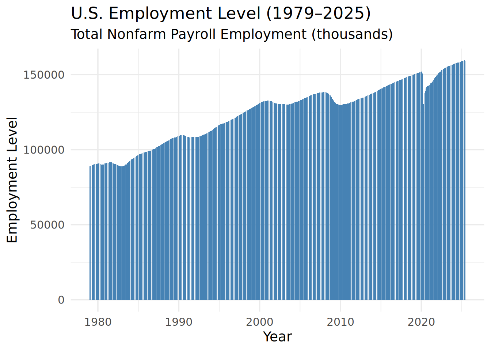
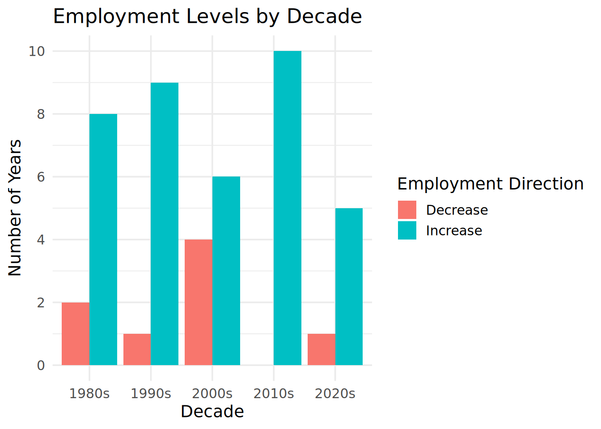
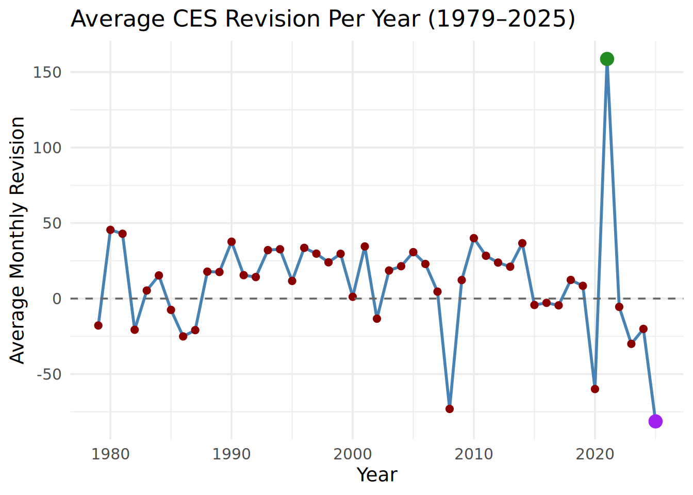
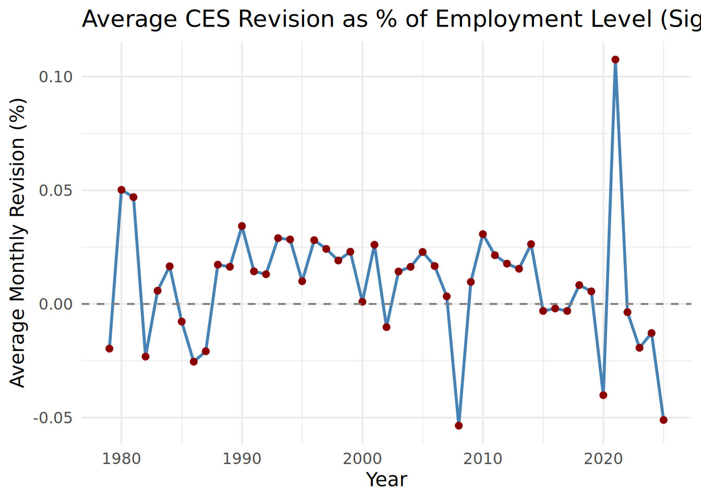
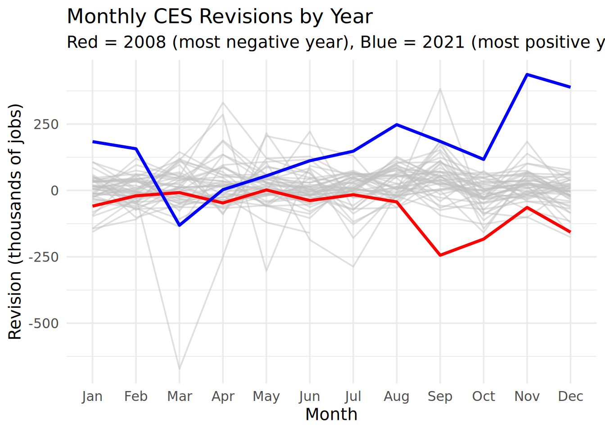

# A tibble: 2 × 2
date level
<date> <dbl>
1 1979-01-01 88808
2 1979-02-01 89055Facts are Facts
On August 1, 2025, President Donald Trump announced on Truth Social that he had directed his staff to fire Dr. Erika McEntarfer, the Commissioner of Labor Statistics. As head of the Bureau of Labor Statistics (BLS), Dr. McEntarfer oversaw all of the agency’s statistical programs and reports—none more closely watched than the Monthly Current Employment Statistics (CES) release, commonly referred to as “the jobs number.” This monthly report consistently moves financial markets, is analyzed by economists, investors, and business leaders, and is often treated by politicians and commentators as a central indicator of economic health.
The abrupt dismissal drew immediate criticism from economists across the political spectrum, who warned that even the perception of political interference could undermine long-term trust in BLS data. Supporters of the President’s decision highlighted recent CES revisions as evidence of potential problems, while defenders of BLS and Dr. McEntarfer acknowledged the agency’s methodological challenges but rejected the idea that they were politically motivated. As a former BLS Commissioner noted, the Commissioner has little to no ability to view or alter CES figures before release, and revisions are a normal, expected part of the process.
In this report, we will assess the truthfulness of these competing claims by conducting a fact check through various different analysis of BLS data sets.
1st Step
We will acquire the dataset of the CES estimates of total employment level of the United States and the dataset that shows the cylce-to-cycle revision of the CES estimate.
# A tibble: 2 × 4
date original final revision
<date> <dbl> <dbl> <dbl>
1 1979-01-01 325 243 -82
2 1979-02-01 301 294 -72nd Step
We will now explore the data in various ways.

# A tibble: 1 × 3
first_level last_level pct_change
<dbl> <dbl> <dbl>
1 88808 159439 79.5

# A tibble: 10 × 4
date original final revision
<date> <dbl> <dbl> <dbl>
1 2021-11-01 210 647 437
2 2021-12-01 199 588 389
3 1983-09-01 733 1116 383
4 1981-04-01 -220 111 331
5 1980-04-01 -479 -193 286
6 2021-08-01 235 483 248
7 1988-06-01 346 568 222
8 2020-05-01 2509 2725 216
9 1990-05-01 164 369 205
10 1996-04-01 2 191 189# A tibble: 10 × 4
date original final revision
<date> <dbl> <dbl> <dbl>
1 2020-03-01 -701 -1373 -672
2 1980-05-01 -180 -483 -303
3 1982-07-01 -17 -304 -287
4 2020-04-01 -20537 -20787 -250
5 2008-09-01 -159 -403 -244
6 1982-06-01 -141 -327 -186
7 2008-10-01 -240 -423 -183
8 1983-07-01 487 308 -179
9 1979-12-01 317 141 -176
10 2020-12-01 -140 -306 -166
# A tibble: 10 × 6
date level original final revision pct_revision
<date> <dbl> <dbl> <dbl> <dbl> <dbl>
1 1983-09-01 91247 733 1116 383 0.420
2 1981-04-01 91283 -220 111 331 0.363
3 1980-04-01 90849 -479 -193 286 0.315
4 2021-11-01 149206 210 647 437 0.293
5 2021-12-01 149781 199 588 389 0.260
6 1988-06-01 105326 346 568 222 0.211
7 1982-09-01 89183 -230 -45 185 0.207
8 1981-09-01 91477 -54 132 186 0.203
9 1990-05-01 109828 164 369 205 0.187
10 1986-09-01 99934 107 277 170 0.170# A tibble: 10 × 6
date level original final revision pct_revision
<date> <dbl> <dbl> <dbl> <dbl> <dbl>
1 2020-03-01 150895 -701 -1373 -672 -0.445
2 1980-05-01 90420 -180 -483 -303 -0.335
3 1982-07-01 89521 -17 -304 -287 -0.321
4 1982-06-01 89865 -141 -327 -186 -0.207
5 1983-07-01 90437 487 308 -179 -0.198
6 1979-12-01 90672 317 141 -176 -0.194
7 2020-04-01 130424 -20537 -20787 -250 -0.192
8 2008-09-01 136762 -159 -403 -244 -0.178
9 1982-10-01 88907 -263 -407 -144 -0.162
10 1986-01-01 98732 566 410 -156 -0.158
# A tibble: 10 × 4
year total_months positive_months pct_positive
<dbl> <int> <int> <dbl>
1 2010 12 11 91.7
2 2014 12 11 91.7
3 2021 12 11 91.7
4 1993 12 10 83.3
5 2001 12 10 83.3
6 1980 12 9 75
7 1991 12 9 75
8 1996 12 9 75
9 1997 12 9 75
10 1999 12 9 75 # A tibble: 10 × 4
year total_negative_revisions total_months pct_negative
<dbl> <int> <int> <dbl>
1 2008 11 12 91.7
2 2023 10 12 83.3
3 1985 9 12 75
4 1986 9 12 75
5 2002 9 12 75
6 2016 9 12 75
7 2017 8 12 66.7
8 1979 7 12 58.3
9 2015 7 12 58.3
10 2020 7 12 58.3# A tibble: 6 × 4
decade total_months positive_months pct_positive
<chr> <int> <int> <dbl>
1 1970s 12 5 41.7
2 1980s 120 59 49.2
3 1990s 120 83 69.2
4 2000s 120 65 54.2
5 2010s 120 75 62.5
6 2020s 66 31 47.0
# A tibble: 7 × 4
president start end jobs_added
<chr> <date> <date> <dbl>
1 Clinton 1993-01-01 2000-12-01 22926
2 Biden 2021-01-01 2024-12-01 16029
3 Reagan 1981-01-01 1988-12-01 15865
4 Obama 2009-01-01 2016-12-01 11330
5 Bush Sr 1989-01-01 1992-12-01 2341
6 Bush Jr 2001-01-01 2008-12-01 2144
7 Trump 2017-01-01 2020-12-01 -3080# A tibble: 7 × 6
president start end start_level end_level jobs_added
<chr> <date> <date> <dbl> <dbl> <dbl>
1 Biden 2021-01-01 2021-04-01 142913 144611 1698
2 Bush Sr. 1989-01-01 1989-04-01 107161 107791 630
3 Trump 2017-01-01 2017-04-01 145628 146174 546
4 Clinton 1993-01-01 1993-04-01 109790 110300 510
5 Reagan 1981-01-01 1981-04-01 91033 91283 250
6 Bush Jr. 2001-01-01 2001-04-01 132703 132457 -246
7 Obama 2009-01-01 2009-04-01 134078 131821 -2257Last Updated: Sunday 11 30, 2025 at 17:47PM